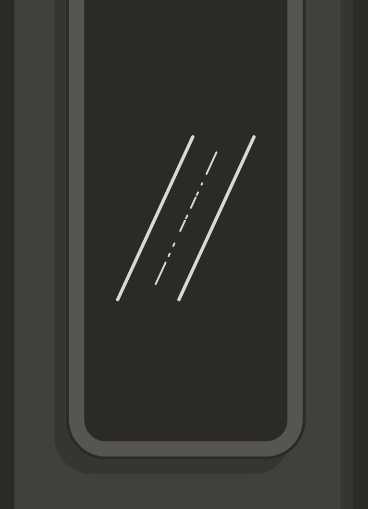
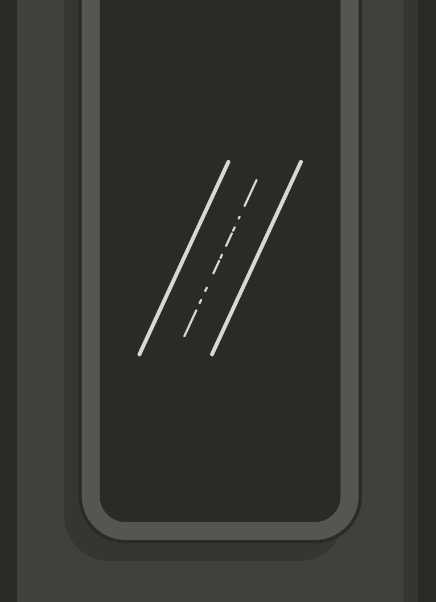

Laura Mercado
Redacción Bogotá
EL TIEMPO
@lauramerher1


ASÍ ES LA TECNOLOGÍA DE PUNTA
QUE TENDRÁ LA PRIMERA LÍNEA
LA RED FÉRREA SERÁ ELÉCTRICA, COMPLETAMENTE AUTOMÁTICA Y SE MONITOREARÁ DESDE DOS CENTROS DE CONTROL.
Con trenes completamente eléctricos y automatizados (operados desde dos centros de control), estaciones que aprovechan al máximo la luz solar y un sistema que está interconectado permanentemente, la primera línea del metro de Bogotá se está construyendo con tecnología de punta y bajo el concepto de movilidad sostenible.
En el 2028, cuando los 30 trenes que conformarán la flota inicial entren en operación, van a ofrecerle a la ciudadanía una experiencia que hasta el momento no se ha visto en el país, con información en tiempo real y un centro de operaciones que va a estar monitoreando, minuto a minuto, los 23,9 kilómetros de recorrido.
“Va a ser una operación totalmente automática y manejada desde un centro de control que vigilará que todo fluya con normalidad. Los pasajeros no van a encontrar conductor, por lo que en la parte frontal del tren van a poder visualizar todo el trayecto”, le explicó a EL TIEMPO Mario Yisbey Gil Álvarez, subgerente de material rodante, equipos y sistemas de la Empresa Metro de Bogotá.
Es así como los bogotanos van a entrar al sistema y se van a encontrar con unas estaciones iluminadas, con grandes ventanales para aprovechar la luz del sol. Allí, van a contar con pantallas y altavoces que indicarán el recorrido de los trenes, los cuales ya tendrán programados unas frecuencias, según la afluencia de personas.
En hora pico, tendrán un tiempo de diferencia de 2 minutos y 20 segundos. Si se evidencia que se requieren más trenes, la diferencia se podrá reducir hasta a un minuto y 40 segundos.
Los trenes se producen en China y cada uno estará compuesto por seis coches, los cuales tendrán cuatro puertas dobles por las que podrán ingresar, como mínimo, 80 personas por minuto. Cada tren podrá alojar un promedio de 1.800 pasajeros.
“Veremos cuántos usuarios están ingresando al sistema y cuál es la capacidad de cada tren gracias a unos sensores de peso”, explicó Gil Álvarez, quien agregó que todo el sistema se pensó para que el usuario viaje tranquilo y seguro.
TECNOLOGÍA EN LOS TRENES
Los vehículos serán totalmente eléctricos y recibirán energía del sistema interconectado eléctrico nacional, por lo que la única forma de que se detenga el recorrido será si ocurre un apagón en todo el país. Cada tren va a circular a 750 voltios en corriente directa.
Uno de los aspectos más destacados es cómo los motores de estos trenes, al frenar, van a generar hasta el 35 por ciento de la energía que necesitan para operar. Esta electricidad viajará por medio de un tercer riel, ubicado al lado contrario de las plataformas por donde ingresarán los usuarios, y que será alimentado por medio de tres subestaciones eléctricas.
“Los motores, cuando están en tracción, es decir, moviéndose o arrancando, consumen energía. Pero, una vez empieza el frenado, esa electricidad se puede transformar en un frenado recuperativo, lo que quiere decir que el tren que está arrancando puede utilizar esa energía. En el caso de que no haya un vehículo al cual transferirla, esta se disipa”, explicó Gil Álvarez.

Fotografía
Mauricio Moreno
EL TIEMPO

Cada uno de los trenes estará compuesto por seis coches, los cuales tendrán cuatro puertas dobles por las que podrán ingresar, como mínimo compuesto, los cuales tendrán cuatro puertas doble
Estos vehículos van a operar a una velocidad de hasta 80 kilómetros por hora. Serán bidireccionales, lo que quiere decir que podrán dirigirse tanto de sur a norte como en sentido contrario. El experto explicó que, para cambiar de dirección, existirá una “cola de maniobras” ubicada en Los Héroes, unos metros después de la última estación, donde cambiarán de vía.
Gracias a su alta tecnología y las vigas en forma de U del viaducto, las personas que vivan cerca de la primera línea no se verán afectadas por las vibraciones generadas por el paso de los trenes.
Estos, además, fueron fabricados con materiales y características especiales para que no generen mucho ruido, procurando la comodidad de los pasajeros.
Por otro lado, se garantizará la seguridad de los usuarios ya que no podrán acceder a la vía. Las estaciones tendrán puertas de andén que se abrirán únicamente cuando llegue el tren.
Si una puerta se daña o pasa alguna eventualidad que provoque que un ciudadano ingrese a la plataforma, existirán sensores que alertarán al centro del control sobre el hecho.
Para procurar que todo este proceso se lleve a cabo correctamente, el primer tren que llegará a la ciudad tendrá que rodar 5.000 kilómetros de pruebas sin pasajeros, mientras los que lleguen después tendrán que recorrer como mínimo 2.500 kilómetros.
“Luego pasaremos a una etapa de marcha blanca, donde operaremos con usuarios, pero sin cobrar, para finalmente dar inicio a la operación comercial. Los tiempos los definiremos con ayuda de la Secretaría de Movilidad”, indicó Gil Álvarez.

Fotografía
Mauricio Moreno
EL TIEMPO
Cada uno de los trenes estará compuesto por seis coches, los cuales tendrán cuatro puertas dobles por las que podrán ingresar, como mínimo compuesto, los cuales tendrán cuatro puertas doble
ESTACIONES INTERCONECTADAS
Cuando las personas entren a las estaciones (será 16) se encontrarán con amplios ventanales de vidrio para aprovechar la energía proveniente del sol, que podrá alimentar las luces y pantallas de estos espacios. Tres de ellas contarán con paneles solares y las otras tendrán las previsiones para que en un futuro también implementen estos elementos.
El experto manifestó que este punto será muy diferente para la segunda línea, pues, como esta será subterránea, tendrá que tener 20 sistemas de ayuda vital, con el fin de garantizar la ventilación de los usuarios y la iluminación, y por eso “estas estaciones consumirán entre un 30 y un 40 por ciento más de energía”.
Las estaciones contarán con un sistema de telecomunicaciones con cámaras de videovigilancia, altavoces y pantallas que será manejado desde el centro de control.
Desde allí se vigilará el estado de las escaleras eléctricas, los ascensores, las barreras de control de acceso, las puertas, entre otros elementos.
Igualmente tendrán un circuito cerrado de televisión (CCTV) en el que los usuarios podrán conocer las frecuencias de los trenes, los pormenores de la operación y publicidad.
También se manejará un sistema de señalización y control de trenes (CBTC), el cual será el encargado de la localización segura de los vehículos, es decir, garantizará el intervalo mínimo de distancia que debe haber entre ellos y la puntualidad que deben tener, por lo que será vital para recuperar la normalidad si llegan a ocurrir retrasos en la operación.
En fin, todo el sistema, según Gil Álvarez, va a ser completamente moderno con última tecnología, que les permita a los usuarios viajar de un punto A a un punto B de manera cómoda, segura y con toda la información disponible.

Seleccione para más información
Así es la tecnología de
punta que tendrá la
primera línea.
Así es la tecnología de
punta que tendrá la
primera línea.
Así es la tecnología de
punta que tendrá la
primera línea.
Así es la tecnología de
punta que tendrá la
primera línea.
Así es la tecnología de
punta que tendrá la
primera línea.
CRÉDITOS
 
